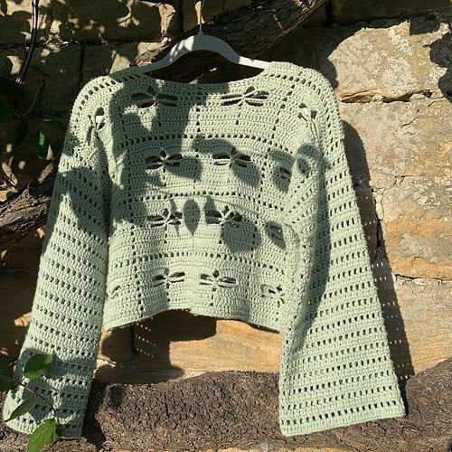
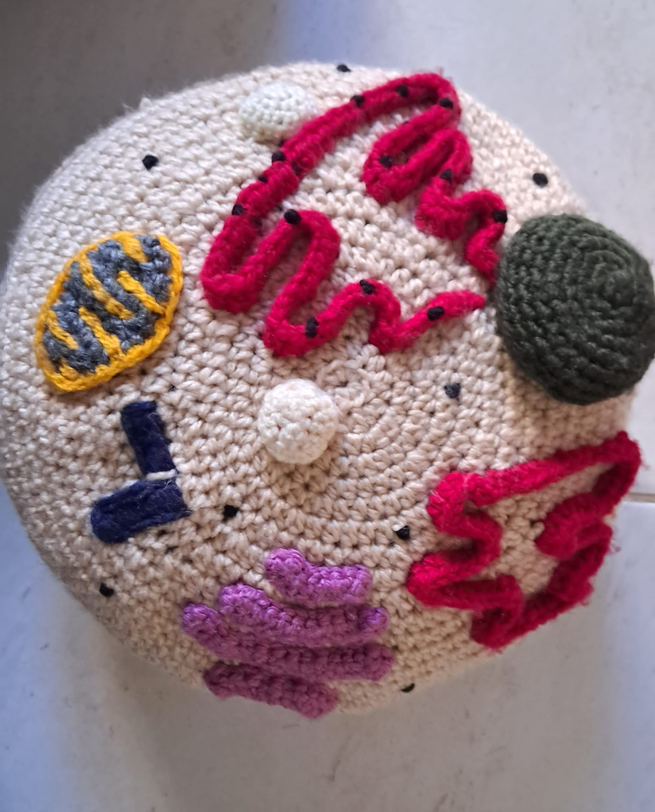
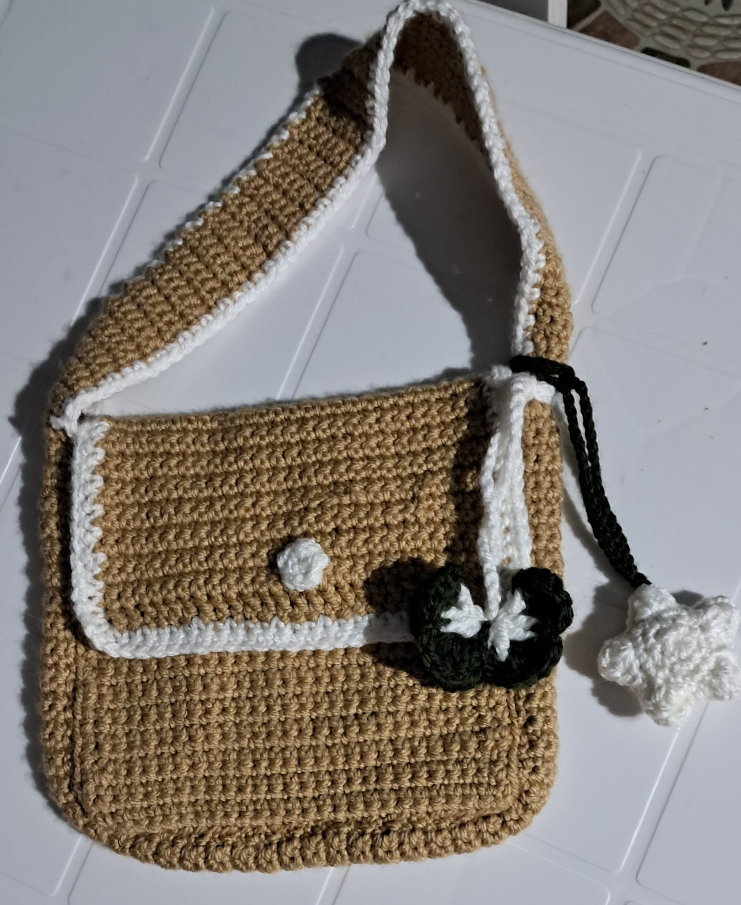

About Crochet
Crochet is basically my therapy. If I grab some yarn and a hook, be certain that I will be lost for hours.
How I Started
My friend is actually the reason I started crocheting. She made this beautiful pink cardigan and I thought it was the coolest thing ever.
First week? Total disaster. My chain stitches looked like a spider web. But I kept going and suddenly, it clicked!
Tools of the Trade
Every crocheter has their go-to kit. Here's mine:
My Creations

Green Dragonfly Jumper
Green Dragonfly Jumper
It took me a month to make and earned many compliments!
Advanced
Eukaryotic Cell Pillow
Eukaryotic Cell Pillow
Made for my biology project — and I got a great grade!
Intermediate
Bag + Charms
Bag + Charms
Made for my sister's birthday. Not my favourite — but still special.
BeginnerWhy I Love Crochet
Best part? I can watch Netflix while doing it. Put on a show, grab my yarn, and the stress melts away.
There's something magical about turning one ball of yarn into something I made with my own hands.